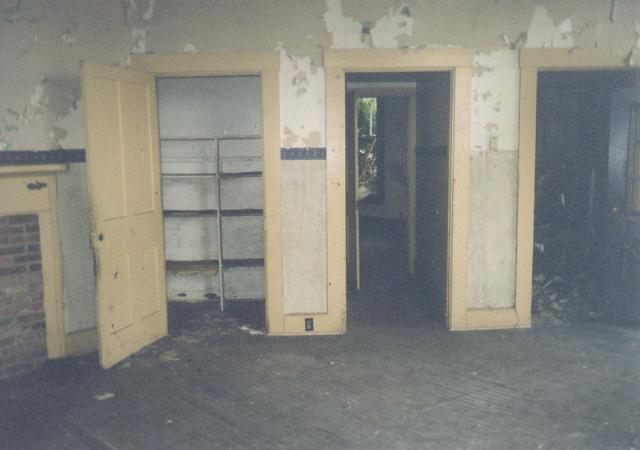
The layout of the Crites house is unlike anything you'll see anywhere else. And, from what the Conservancy has found out, it looks like it might be a one-of-a-kind design, even among octagon-style homes--nothing like it anywhere else in the world. The house is almost completely symmetrical, with a ring of rooms along the outside walls. They are bisected by a hallway that goes from the front door to the back wall (behind which are closets), and facing side entrances on opposite sides of the house.
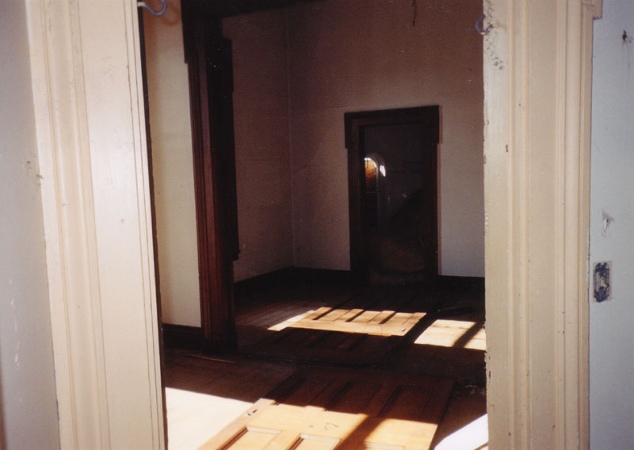
The rooms radiate outward from a central chamber, where the main staircase spirals up to the second floor. The staircase is the Crites house's fascinating centerpiece, made out of a very nice dark wood, and it's still more than sturdy enough to climb.
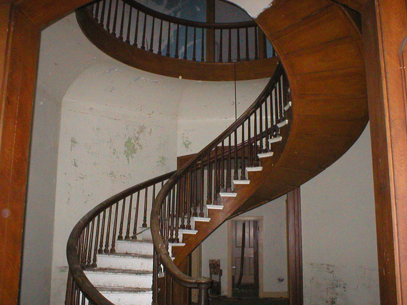
Upstairs is a ring of rooms just like on the first floor, except that these are smaller and shaped more like pie wedges. Each room has doors that lead into its neighbor rooms on both sides, as well as a main door that opens onto the circular landing at the top of the stairs. You can lean over the railing here and look down at the first floor, or up at the octagon cut into the ceiling at the axis point of the whole house. Fittingly, there are eight rooms up here. Eight bedrooms seems like a lot, but if you wanted you could have just that living here. My guess is that some of them were living rooms, offices, or studies.
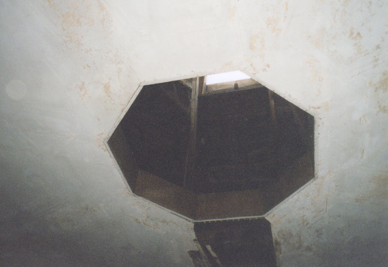
The outer walls of the eight upstairs rooms are chopped short by the slope of the roof, into which dormer windows are set, giving the illusion of more head space. Close to the wall there are midget closets with irregularly-shaped doors.
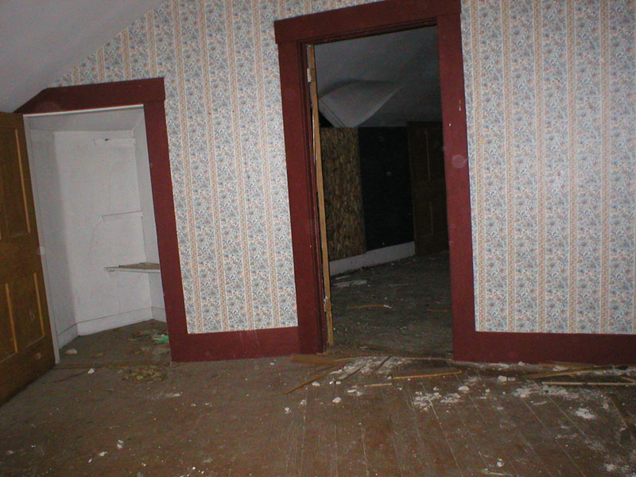
One room--the master bedroom, I think--has, in place of a little closet, the hidden staircase to the attic. If you can fit through the stairwell, which is painfully tiny, and avoid the numerous missing risers, you come up into a cramped attic crawlspace shaped like (you guessed it) an octagon.
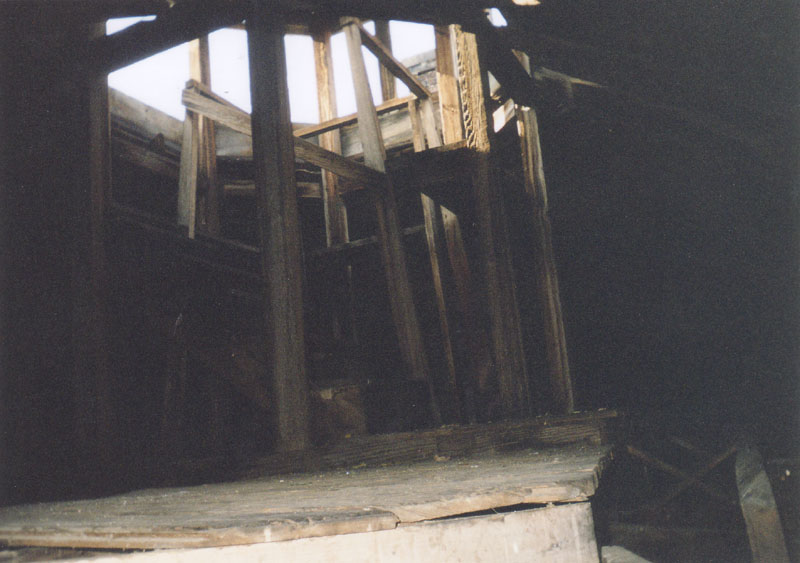
Go a little higher, onto an elevated place in the attic, and you get the 360-degree roof view from the open viewing platform at the top of the house. Looking down, you'll see straight through the spiral of the staircase to the floor two stories below. In the photo below, taken from the observation peak, you can see the famous pumpkin water tower in the distance. (For a look at the view of Circleville from the house in 1880, check out this image.) The view is a little different after February of 2004, ever since the Crites house was moved via flatbed truck to a location about half a mile away.
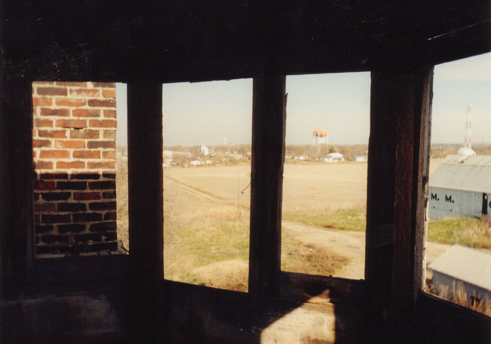
Of course there was also a cellar to this unique house--a cellar that has, sadly, been lost to the move. When the house sat on its original stone foundation the cellar was best accessed from outside, where the cellar door stood open near one of the side entrances.
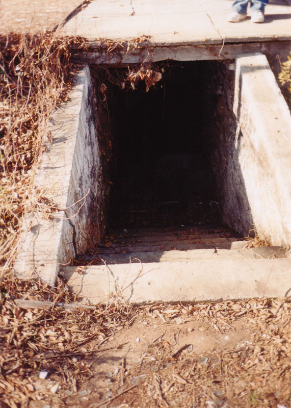
The basement had brick walls which angled around a central furnace chamber. The octagon motif continued down here, even in the way the roofbeams were oriented. Some random junk was scattered about when I visited the cellar--an old piece of lawn furniture, boxes of duct fittings--but it was mainly empty.
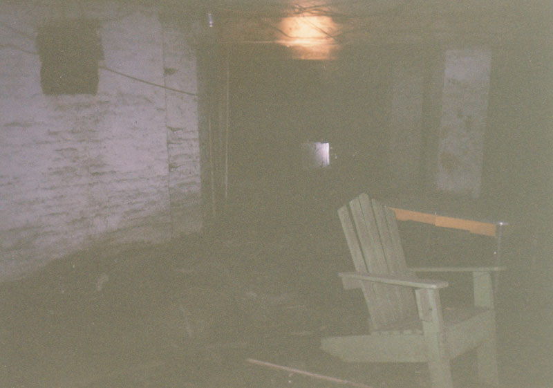
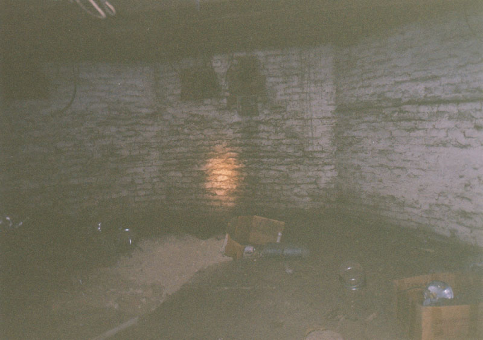
Thanks to Circleville preservationists working with the Roundtown Conservancy, this fabulous place was saved from death by WalMart and moved, in a miraculous display of industrial heavy lifting, to a new permanent location, where it is supposedly going to become a museum. So although it was a fascinating abandoned building when I had the good fortune to find it open and waiting to be explored, it will probably be possible to see this interior for yourself before long. I will keep you posted. But it's definitely too bad about the basement; I don't suppose it could have been saved.
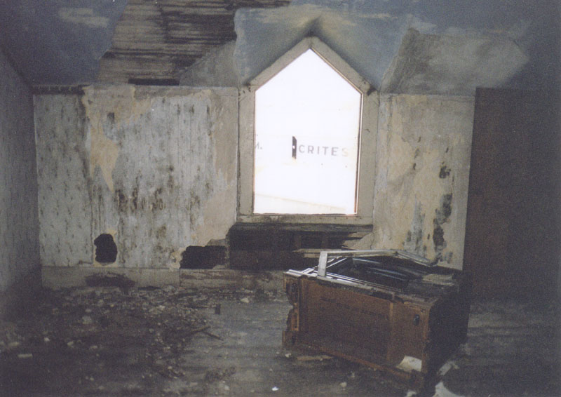
If you happen to know anything about the Gregg, Betts, or Crites families or their octagon house, please do send me an e-mail. The uniqueness of their home is demonstrated by the floor layout diagram below, done by Tom Cooper of the Conservancy. If you have a spare moment, e-mail him at cooper360@dragonbbs.com and thank him for saving the octagon house.
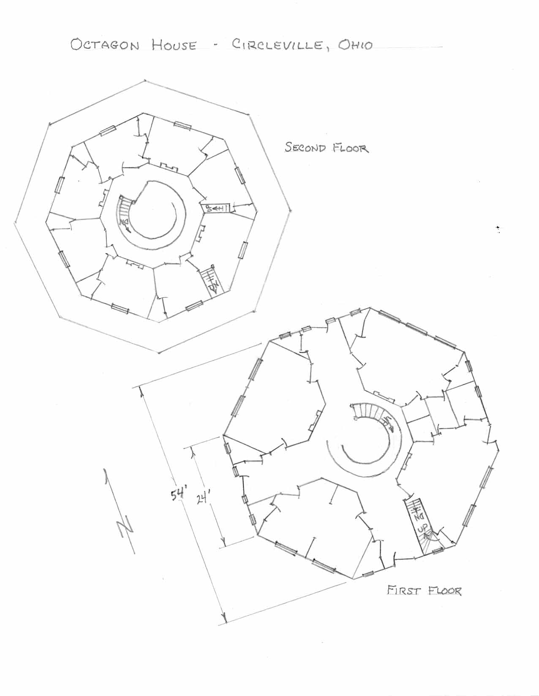
Back